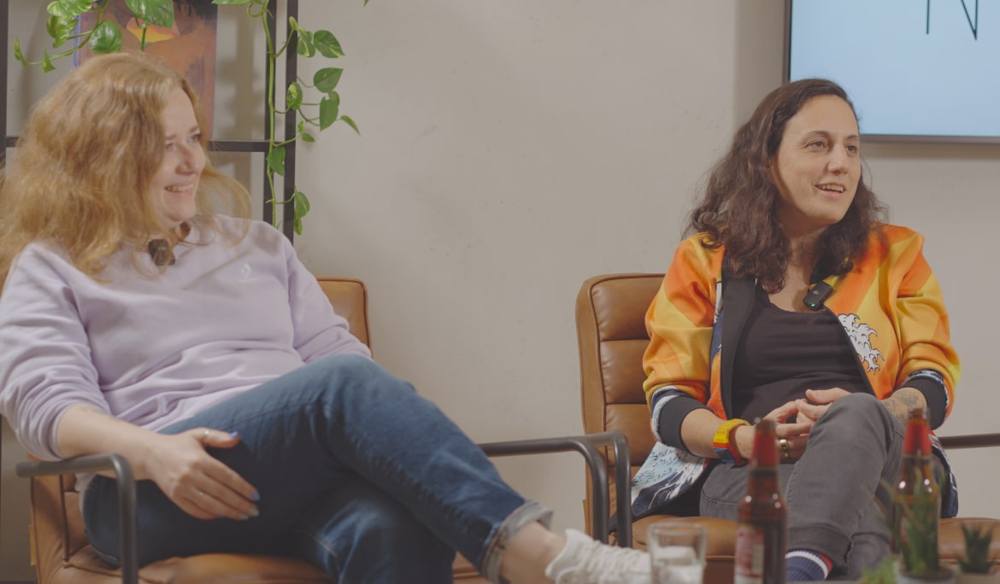
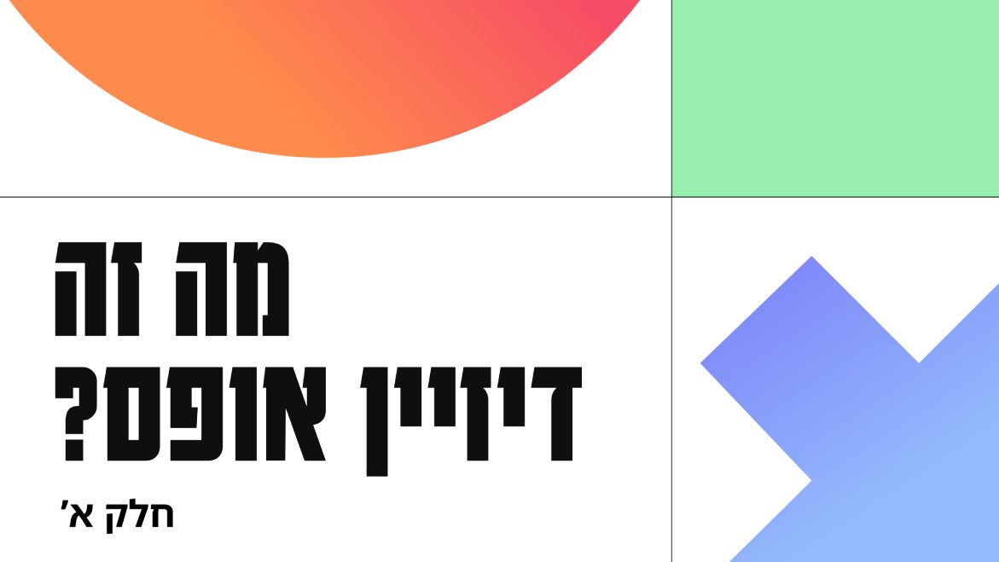

קהילת מוצר, תשתיות עיצוב, למידה, חקירה משותפת וצמיחה
Design System Maturity Level Survey
ראיונות

תפקיד ה- DesignOps בחברת GONG
מרואיינת: ענבר עמיר

תהליכי בנייה של צוותי עיצוב בסטארטאפים ותאגידים
מרואיין: עופר בן שושן

על תהליכי Maturity בעבודה על דיזיין סיסטם
מרואיינות: אתי לייפר שרביט ויוליה סקיגר
קצרים

מה זה דיזיין אופס?

מה זה גיוס וניהול צוות עיצוב בסביבה אג׳ילית?
איך מעצבים בסקייל?
מאמרים
מה זה חוב עיצובי, ומה הקשר שלו ל- DesignOps
מאת: דינה ניימן
עקביות בעיצוב בסקייל: ניתוח variables בפיגמה
מאת: יוליה סקיגר
איך מעצבים עם אילוצים
מאת: קרן שגב
ארגז כלים
דיזיין סיסטמז
uxtools
לורם איפסום דולור סיט אמט, קונסקטורר אדיפיסינג אלית לורם שבצק
uxtools
לורם איפסום דולור סיט אמט, קונסקטורר אדיפיסינג אלית לורם שבצק
uxtools
לורם איפסום דולור סיט אמט, קונסקטורר אדיפיסינג אלית לורם שבצק
uxtools
לורם איפסום דולור סיט אמט, קונסקטורר אדיפיסינג אלית לורם שבצק
uxtools
לורם איפסום דולור סיט אמט, קונסקטורר אדיפיסינג אלית לורם שבצק
uxtools
לורם איפסום דולור סיט אמט, קונסקטורר אדיפיסינג אלית לורם שבצק